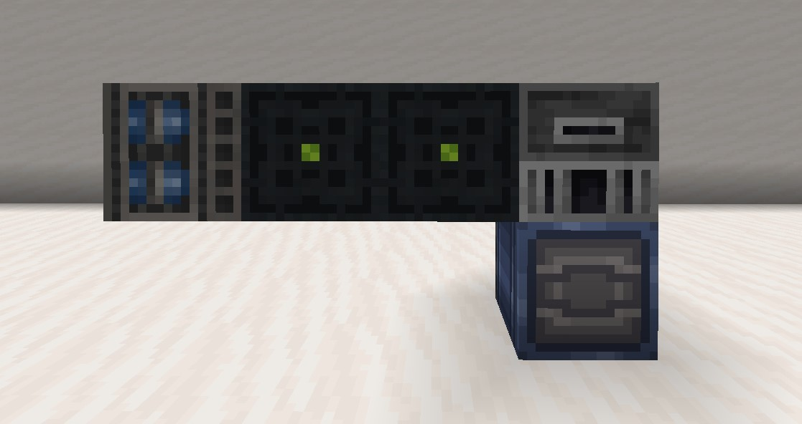

Home
Resonant machines are special multiblock structures that require resonant power to function, however, the
extra work is more than worth it.
To power a resonant machine you will need to direct resonant cables from a generator or battery/capacitor into the according power input block of the machine.
Powered vacuum
Powered vacuums are essentially extended hoppers, collecting any dropped item in a 3-block radius.
Required blocks
Hopper
1
Dropper (input/output)
Radar
Radars tell any player within a 4-5 block radius how close other players are to the gold block
of the radar, the more iron bars you use the higher the range.
Required blocks
Redstone torch
1
Iron block
Iron bars
1-64
Gold block (input)
1
Tesla coil
Tesla coils can provide buffs to friendly players, or act as a passive defence, depending on what armour you are wearing, the more iron bars used in a 5-block radius of the beacon the higher the range.
Diamond/Leather armour = Full immunity, no buffs or debuffs.
Gold armour = No debuffs, Swiftness 2, Regen 2, And repairs armour.
Any netherite/iron armour = Amplified damage, Netherite will also spread the effect to nearby
players/entites.
Standing on Gold blocks or Iron blocks, bars, doors, or trapdoors, will summon lightning onto that
block.
Iron golems will gain regen 1
Required blocks
Beacon
1
Iron bars
1+
Gold block (input)
1-12
Industrial machines
These machines are generally used in factories, mostly used to turn common materials into more valuable ones.
Prismatic converter
Completed + with power flow
Prismatic converters generate prismarine crystals (used to power shields) off of resonant pulses.
Note that the redstone blocks are placed between the redstone lamps
Required blocks
Redstone lamp
4
Redstone blocks
2
Aluminum blocks (custom)
4
Composite blocks (custom)
2
Dispenser (output)
1
Amount per pulse
2 crystals
Materials refinery
Materials refineries refine common/easy to get item's into more valuble ones, such as rotten flesh to
charcoal, it should be noted that some recipes can give various different results.
Recipes
Ingredient(s)
Result
9 Rotten flesh
1 Charcoal
2 Wheat
4 Wheat dough
16 Wheat dough, 1 Milk/Water bucket
8 Wheat batter
4 Bone
1 Charcoal
1 Bone block
5 Charcoal
12 Bonemeal
3 Charcoal
8 Amethyst shards, 2 Redstone dust
4 Crystallized radon
Recipes (2)
Ingredient(s)
Possible items
8 Sweet berry, 1 Brick
1 Red dye, 1 Brick
1 Brown dye, 1 Brick
1 Purple dye, 1 Brick
1 Magenta dye, 1 Brick
1 Pink dye, 1 Brick
1 Cobblestone
2 Iron nuggets
2 Gold nuggets
2 Charcoal
2 Gray dye
2 Bonemeal
2 Flint
2 Clay
2 Gravel
2 Sand
1 Granite
2 Nether quartz
2 Gold nuggets
2 Charcoal
2 Sand
2 Flint
2 Gravel
2 Cobblestone
Required blocks
Redstone blocks
4
Resonant cable (power input)
1
Blast furnace
Barrel (input/output)
Arc smeltery
Arc smelteries will smelt ores at more efficient rates, giving the player more then they would from
smelting the ore in a furnace.
Recipes
Ingredient(s)
Result
1 Iron ore / 1 Raw iron
1 Iron ingot, 1-4 Iron nuggets
1 Gold ore / 1 Raw gold
1 Gold ingot, 0-5 Gold nuggets
1 Diamond ore
2 Diamonds
1 Redstone ore
5 Redstone dust
1 Cobblestone
2 Stonebricks
1 Clay ball
2 Bricks
1 Raw clay block
2 White glazed terracotta
1 Stone
2 Smooth stone
1 Stone slab
4 Smooth stone slabs
Required blocks
Iron block
3
Steel block (custom)
4
Resonant cable (power input)
1
Dropper (input)
1
Barrel (output)
1
Machine press

A machine press is used to create special items such as metal plates and pipes.
Recipes
Ingredient(s)
Result
2 Coal/Charcoal, 1 Iron ingot
4 Steel ingots, 5% chance for +1, additional 5% chance for +1
2 Steel ingots
4 Steel plates, 2.5% chance for +1, additional 2.5% chance for +1
4 Steel plates, 2 Iron nugggets
4 Pipes, 12.5% chance for +2
5 Steel plates, 3 Redstone dust
3 Pistons, 5% chance for +1, Additional 2.5% chance for 1 steel ingot
4 Clay balls, 2 Gold nuggets, 1 Redstone dust
2 Composite ingots
1 Tungsten ore
4 Tungsten nuggets, 12.5% chance for +1
3 Tungsten nuggets
1 Tungsten ingot, 5% chance for +1
2 Tungsten ingots
2 Tungsten plates, 5% chance for +1
2 Copper ingots
4 Copper plates, 7.5% chance for +2
2 Copper plates, 4 Redstone dust
4 Resonant cables, 12.5% chance for +2
Recipes (2)
Ingredient(s)
Result(s)
1 Uranium ore
2 Uranium ingots, 5% chance for +1
2 Redstone ore
6 Redstone dust, 25% chance for 2 Crystallized radon, additional 12.5% chance for +4 radon
2 Coal ore
3 Coal, 25% chance for +4, additional 12.5% chance for 2 gunpowder
2 Iron ore
3 Raw iron, 25% chance for 1 iron nugget, additional 12.5% chance for +2 raw iron
2 Gold ore
3 Raw gold, 25% chance for 1 gold nugget, additional 12.5% chance for +2 raw gold
Required blocks
Machine press (custom, power input)
1
Barrel (Input/Output)